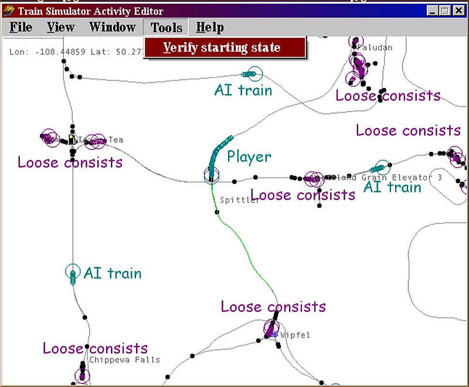
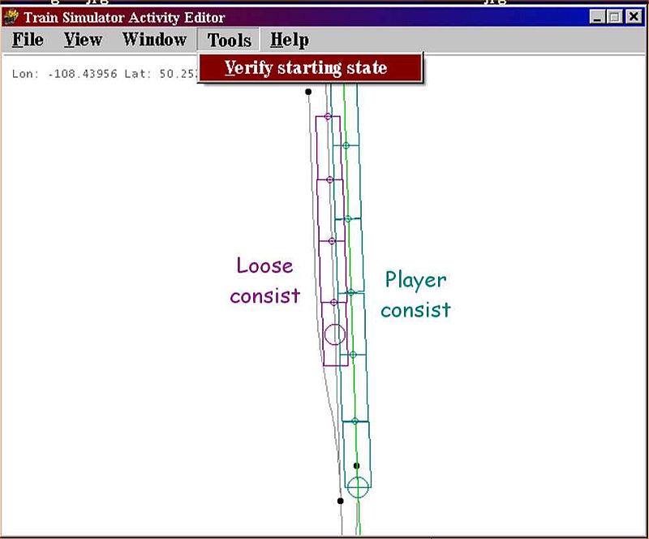
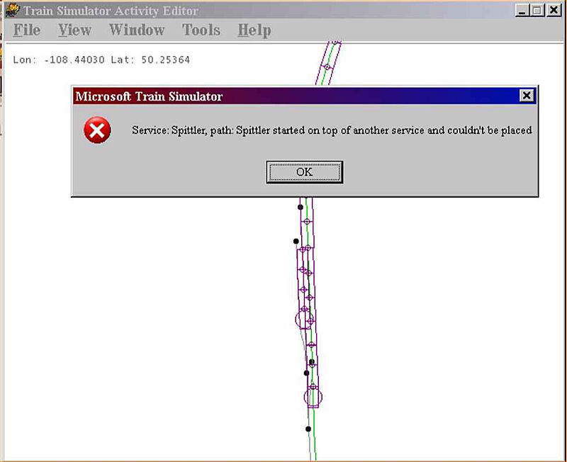
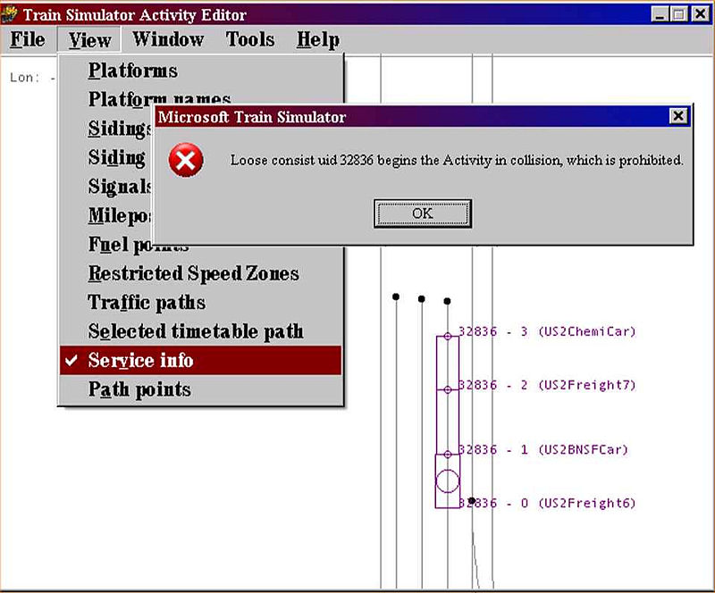

Activities - Verify Starting State
by Jim "sniper297" Ward
Overview
Save yourself some grief.
In the activity editor menu under "TOOLS", select VERIFY STARTING STATE before you exit. If you're making a complex activity with a lot of loose consists and AI trains, it's a good idea to stop and run that tool occasionally as you go along, so you don't have to hunt thru zillions of consists to find the faulty one.

If everything is okay, you get a visual on where everything will be when the activity starts.

You can also zoom in to see if loose consists are fouling a switch.

Starting one service on top of another or on top of a loose consist will cause errors in the game, VERIFY STARTING STATE will catch those.

Clicking on VIEW, SERVICE INFO will clutter up the screen, but if you get this error message it makes it easier to hunt down exactly which consist is "32836". Note here four cars listed but only 3 showing, the consist is too close to the end of the track. This is the most common cause of "FAILED TO INITIALIZE RIGIDBODY UID 32836-3" (or whatever) in the game, second reason is a service too long for the path it's on. If you do get that message in the game, VERIFY STARTING STATE will tell you exactly what and where the problem is.